Chapter 5 Diversity-based class
Diversity is one of the core topics in community ecology. It refers to alpha diversity, beta diversity and gamma diversity.
5.1 trans_alpha class
Alpha diversity can be transformed and visualized using the trans_alpha class.
Creating an object of trans_alpha class can invoke the alpha_diversity data stored in the microtable object.
5.1.1 Example
Creating a trans_alpha object can return two data.frame with the prefix ‘data_’: data_alpha and data_stat.
data_alpha is used for subsequent differential test and visualization.
t1 <- trans_alpha$new(dataset = mt_rarefied, group = "Group")
# return t1$data_stat
head(t1$data_stat)## The group statistics are stored in object$data_stat ...## The transformed diversity data is stored in object$data_alpha ...| Group | Measure | N | Mean | SD | SE |
|---|---|---|---|---|---|
| CW | Observed | 30 | 1843 | 220.6 | 40.27 |
| CW | Chao1 | 30 | 2553 | 338.1 | 61.73 |
| CW | ACE | 30 | 2716 | 367 | 67.01 |
| CW | Shannon | 30 | 6.308 | 0.5355 | 0.09777 |
| CW | Simpson | 30 | 0.9897 | 0.01305 | 0.002382 |
| CW | InvSimpson | 30 | 198.8 | 108.4 | 19.8 |
Then, we test the differences among groups using Kruskal-Wallis Rank Sum Test (overall test when groups > 2), Wilcoxon Rank Sum Tests (for paired groups), Dunn’s Kruskal-Wallis Multiple Comparisons (for paired groups when groups > 2) and anova with multiple comparisons.
## The result is stored in object$res_diff ...| Comparison | Measure | Group | P.unadj | P.adj | Significance |
|---|---|---|---|---|---|
| IW - CW - TW | Observed | IW | 0.155 | 0.2791 | ns |
| IW - CW - TW | Chao1 | IW | 0.01696 | 0.05088 | ns |
| IW - CW - TW | ACE | IW | 0.01333 | 0.05088 | ns |
| IW - CW - TW | Shannon | IW | 0.5319 | 0.7978 | ns |
| IW - CW - TW | Simpson | CW | 0.8083 | 0.9094 | ns |
| IW - CW - TW | InvSimpson | CW | 0.8083 | 0.9094 | ns |
## P value adjustment method: holm ...## Kruskal-Wallis rank sum test
##
## data: x and g
## Kruskal-Wallis chi-squared = 3.7281, df = 2, p-value = 0.16
##
##
## Dunn's Pairwise Comparison of x by g
## (Holm)
## Col Mean-│
## Row Mean │ CW IW
## ─────────┼──────────────────────
## IW │ -1.929750
## │ 0.1609
## │
## TW │ -1.020470 0.909280
## │ 0.6150 0.3632
##
## FWER = 0.05
## Reject Ho if p ≤ FWER with stopping rule, where p = Pr(|Z| ≥ |z|)
## Kruskal-Wallis rank sum test
##
## data: x and g
## Kruskal-Wallis chi-squared = 8.1537, df = 2, p-value = 0.02
##
##
## Dunn's Pairwise Comparison of x by g
## (Holm)
## Col Mean-│
## Row Mean │ CW IW
## ─────────┼──────────────────────
## IW │ -2.841455
## │ 0.0135*
## │
## TW │ -1.176115 1.665340
## │ 0.2395 0.1917
##
## FWER = 0.05
## Reject Ho if p ≤ FWER with stopping rule, where p = Pr(|Z| ≥ |z|)
## Kruskal-Wallis rank sum test
##
## data: x and g
## Kruskal-Wallis chi-squared = 8.6348, df = 2, p-value = 0.01
##
##
## Dunn's Pairwise Comparison of x by g
## (Holm)
## Col Mean-│
## Row Mean │ CW IW
## ─────────┼──────────────────────
## IW │ -2.851339
## │ 0.0131*
## │
## TW │ -0.810432 2.040906
## │ 0.4177 0.0825
##
## FWER = 0.05
## Reject Ho if p ≤ FWER with stopping rule, where p = Pr(|Z| ≥ |z|)
## Kruskal-Wallis rank sum test
##
## data: x and g
## Kruskal-Wallis chi-squared = 1.2627, df = 2, p-value = 0.53
##
##
## Dunn's Pairwise Comparison of x by g
## (Holm)
## Col Mean-│
## Row Mean │ CW IW
## ─────────┼──────────────────────
## IW │ -1.111873
## │ 0.7986
## │
## TW │ -0.415099 0.696774
## │ 0.6781 0.9719
##
## FWER = 0.05
## Reject Ho if p ≤ FWER with stopping rule, where p = Pr(|Z| ≥ |z|)
## Kruskal-Wallis rank sum test
##
## data: x and g
## Kruskal-Wallis chi-squared = 0.4256, df = 2, p-value = 0.81
##
##
## Dunn's Pairwise Comparison of x by g
## (Holm)
## Col Mean-│
## Row Mean │ CW IW
## ─────────┼──────────────────────
## IW │ -0.049416
## │ 0.9606
## │
## TW │ 0.538641 0.588057
## │ 1.0000 1.0000
##
## FWER = 0.05
## Reject Ho if p ≤ FWER with stopping rule, where p = Pr(|Z| ≥ |z|)
## Kruskal-Wallis rank sum test
##
## data: x and g
## Kruskal-Wallis chi-squared = 0.4256, df = 2, p-value = 0.81
##
##
## Dunn's Pairwise Comparison of x by g
## (Holm)
## Col Mean-│
## Row Mean │ CW IW
## ─────────┼──────────────────────
## IW │ -0.049416
## │ 0.9606
## │
## TW │ 0.538641 0.588057
## │ 1.0000 1.0000
##
## FWER = 0.05
## Reject Ho if p ≤ FWER with stopping rule, where p = Pr(|Z| ≥ |z|)
## Kruskal-Wallis rank sum test
##
## data: x and g
## Kruskal-Wallis chi-squared = 3.7281, df = 2, p-value = 0.16
##
##
## Dunn's Pairwise Comparison of x by g
## (Holm)
## Col Mean-│
## Row Mean │ CW IW
## ─────────┼──────────────────────
## IW │ -1.929750
## │ 0.1609
## │
## TW │ -1.020470 0.909280
## │ 0.6150 0.3632
##
## FWER = 0.05
## Reject Ho if p ≤ FWER with stopping rule, where p = Pr(|Z| ≥ |z|)
## Kruskal-Wallis rank sum test
##
## data: x and g
## Kruskal-Wallis chi-squared = 0.1267, df = 2, p-value = 0.94
##
##
## Dunn's Pairwise Comparison of x by g
## (Holm)
## Col Mean-│
## Row Mean │ CW IW
## ─────────┼──────────────────────
## IW │ -0.123541
## │ 0.9017
## │
## TW │ 0.227316 0.350858
## │ 1.0000 1.0000
##
## FWER = 0.05
## Reject Ho if p ≤ FWER with stopping rule, where p = Pr(|Z| ≥ |z|)
## Kruskal-Wallis rank sum test
##
## data: x and g
## Kruskal-Wallis chi-squared = 9.6825, df = 2, p-value = 0.01
##
##
## Dunn's Pairwise Comparison of x by g
## (Holm)
## Col Mean-│
## Row Mean │ CW IW
## ─────────┼──────────────────────
## IW │ 3.039197
## │ 0.0071*
## │
## TW │ 0.941409 -2.097787
## │ 0.3465 0.0718
##
## FWER = 0.05
## Reject Ho if p ≤ FWER with stopping rule, where p = Pr(|Z| ≥ |z|)
## The result is stored in object$res_diff ...| Measure | Method | Group | Letter | MonoLetter |
|---|---|---|---|---|
| Observed | Dunn’s Kruskal-Wallis Multiple Comparisons | IW | a | a |
| Observed | Dunn’s Kruskal-Wallis Multiple Comparisons | TW | a | a |
| Observed | Dunn’s Kruskal-Wallis Multiple Comparisons | CW | a | a |
| Chao1 | Dunn’s Kruskal-Wallis Multiple Comparisons | IW | a | a |
| Chao1 | Dunn’s Kruskal-Wallis Multiple Comparisons | TW | ab | ab |
| Chao1 | Dunn’s Kruskal-Wallis Multiple Comparisons | CW | b | b |
# more options
t1$cal_diff(method = "KW_dunn", KW_dunn_letter = FALSE)
head(t1$res_diff)
t1$cal_diff(method = "wilcox")
head(t1$res_diff)
t1$cal_diff(method = "t.test")Then, let’s try to use anova.
From v1.0.0, the alpha parameter can be used to adjust the significance threshold (default: 0.05) of multiple comparisons when method is ‘anova’ or ‘KW_dunn’.
## Perform post hoc test with the method: duncan.test ...## The result is stored in object$res_diff ...| Measure | Method | Group | Letter |
|---|---|---|---|
| Observed | anova | IW | a |
| Observed | anova | TW | a |
| Observed | anova | CW | a |
| Chao1 | anova | IW | a |
| Chao1 | anova | TW | ab |
| Chao1 | anova | CW | b |
The multi-factor analysis of variance is also supported with the formula parameter, such as two-way anova.
t1 <- trans_alpha$new(dataset = mt_rarefied, group = "Group")
t1$cal_diff(method = "anova", formula = "Group+Type")
head(t1$res_diff)
# see the help document for the usage of formulaThe plot_alpha function add the significance label by searching the results in object$res_diff instead of recalculating the significance. Now, let’s plot the alpha diversity for each group and include the anova result.
t1$cal_diff(method = "anova")
# y_increase can adjust the distance from the letters to the highest point
t1$plot_alpha(measure = "Chao1", y_increase = 0.3)
t1$plot_alpha(measure = "Chao1", y_increase = 0.1)
# add_sig_text_size: letter size adjustment
t1$plot_alpha(measure = "Chao1", add_sig_text_size = 6, add = "jitter", order_x_mean = TRUE)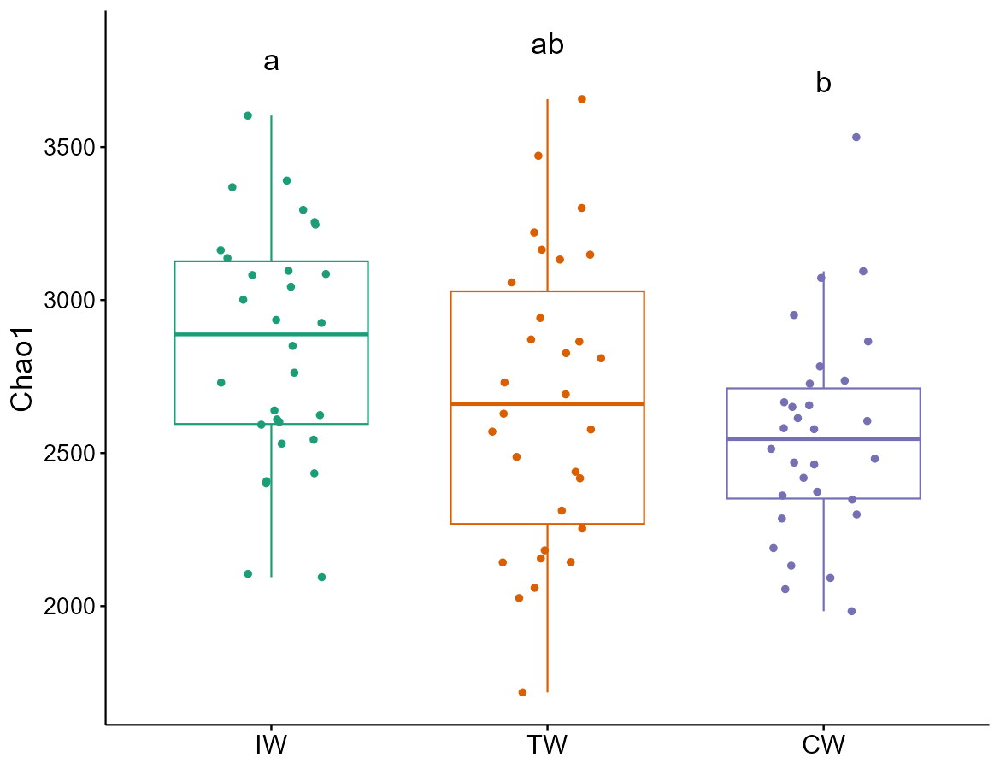
t1$cal_diff(method = "wilcox")
t1$plot_alpha(measure = "Chao1", shape = "Group")
# y_start: starting height for the first label
# y_increase: increased height for each label
t1$plot_alpha(measure = "Chao1", shape = "Group", add = "jitter", y_start = 0.1, y_increase = 0.1)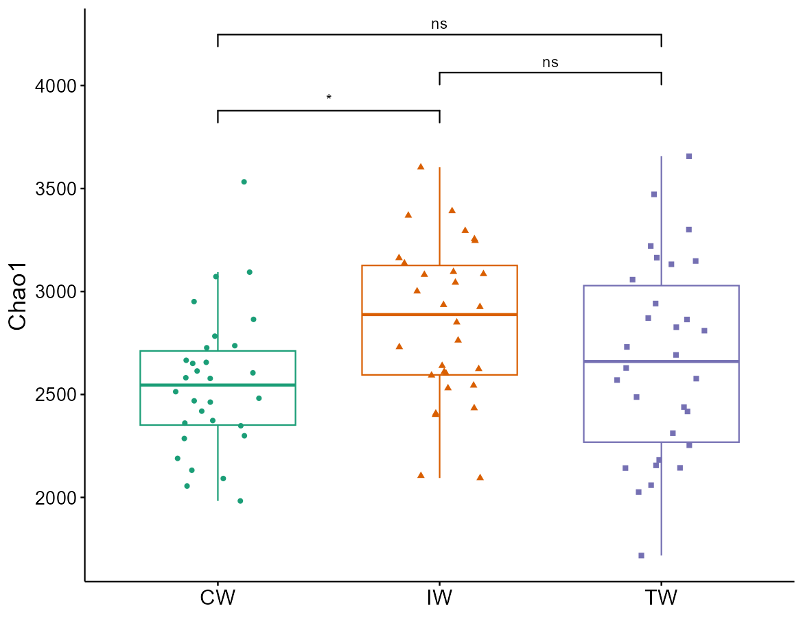
Let’s try to remove the ‘ns’ in the label by manipulating the object$res_diff.
t1$res_diff %<>% base::subset(Significance != "ns")
t1$plot_alpha(measure = "Chao1", add = "dotplot", xtext_size = 15)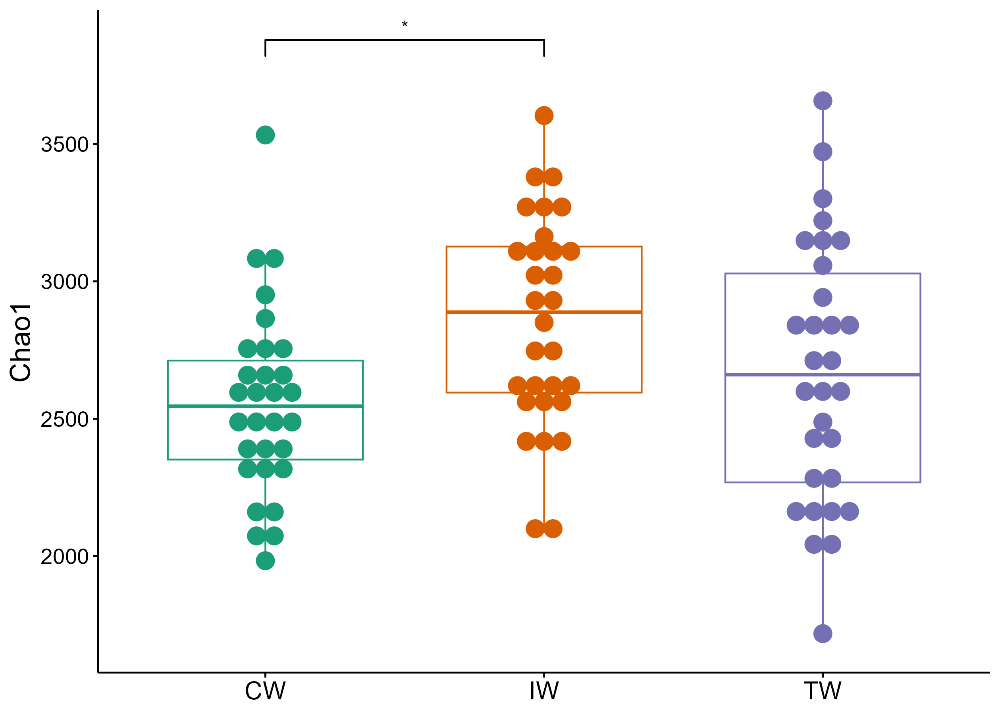
The trans_alpha class supports the differential test of groups within each group using the by_group parameter.
t1 <- trans_alpha$new(dataset = mt_rarefied, group = "Type", by_group = "Group")
t1$cal_diff(method = "wilcox")
t1$plot_alpha(measure = "Shannon")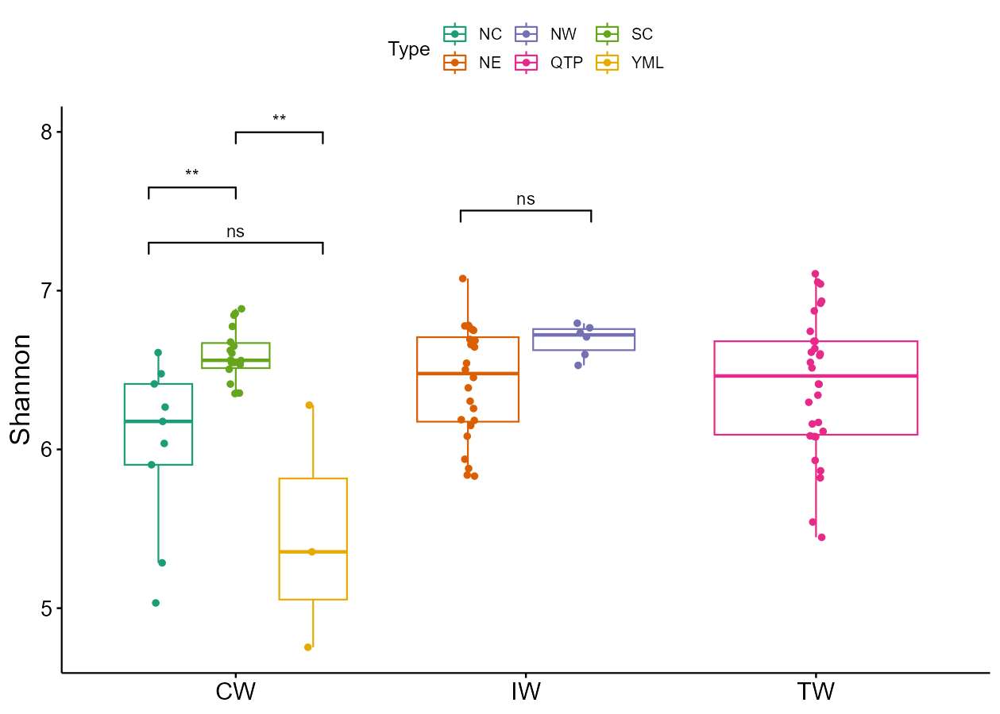
Scheirer Ray Hare test is a nonparametric test that is suitable for a two-way factorial experiment.
t1 <- trans_alpha$new(dataset = mt_rarefied)
# require rcompanion package to be installed
t1$cal_diff(method = "scheirerRayHare", formula = "Group+Type")Linear mixed-effects model can be selected with the method = "lme".
This model is implemented based on the lmerTest package.
For more parameters, please see lmerTest::lmer function.
Please use parameter passing when more parameters are needed.
For the formula usage, please follow this (https://mspeekenbrink.github.io/sdam-r-companion/linear-mixed-effects-models.html).
In the return table, conditional R2 is the total variance explained by fixed and random effects,
and marginal R2 is the variance explained by fixed effects.
if(!require("lmerTest")) install.packages("lmerTest")
t1 <- trans_alpha$new(dataset = mt_rarefied)
# just using (1|Type) as an example to show the random effect
t1$cal_diff(method = "lme", formula = "Group + (1|Type)")
View(t1$res_diff)
# return_model = TRUE can return original models, i.e. object$res_model
t1$cal_diff(method = "lme", formula = "Group + (1|Type)", return_model = TRUE)Note that from v1.9.0, the parameter plot_type control which type of plot is employed.
All the options starting with “gg” (e.g., “ggboxplot”, “ggdotplot”, “ggviolin”, “ggstripchart”, “ggerrorplot”) means they are the functions coming from the ggpubr package.
t1 <- trans_alpha$new(dataset = mt_rarefied, group = "Type")
t1$cal_diff(method = "KW_dunn", KW_dunn_letter = TRUE)
t1$plot_alpha(plot_type = "ggboxplot", add = "none")
t1$plot_alpha(plot_type = "ggdotplot")
t1$plot_alpha(plot_type = "ggdotplot", fill = "Type", alpha = 0.3)
t1$plot_alpha(plot_type = "ggdotplot", add = "mean_se")
t1$plot_alpha(plot_type = "ggdotplot", add = c("mean_se", "violin"))
t1$plot_alpha(plot_type = "ggdotplot", add = c("mean_se", "violin"), fill = "Type", alpha = 0.2)
t1$plot_alpha(plot_type = "ggviolin")
t1$plot_alpha(plot_type = "ggviolin", y_increase = 0.4, add = "mean_se")
t1$plot_alpha(plot_type = "ggviolin", fill = "Type", alpha = 0.2, y_increase = 0.4, add = "mean_se", add_sig_text_size = 6)
t1$plot_alpha(plot_type = "ggstripchart", add = "mean_se")
t1$plot_alpha(plot_type = "ggerrorplot")The option "errorbar" or "barerrorbar" in plot_alpha will invoke the data_stat instead of data_alpha for the Mean±SE (or SD) plot (based on the ggplot2).
The line is optional to be added between points (Mean) for the case with a gradient.
t1 <- trans_alpha$new(dataset = mt_rarefied, group = "Group")
t1$cal_diff(method = "KW_dunn", measure = "Chao1", KW_dunn_letter = TRUE)
t1$plot_alpha(measure = "Chao1")
t1$plot_alpha(plot_type = "errorbar", measure = "Chao1")
t1$plot_alpha(plot_type = "errorbar", measure = "Chao1", y_increase = -0.2)
t1$plot_alpha(plot_type = "errorbar", measure = "Chao1", y_increase = -0.2, add_line = TRUE, line_type = 2, line_alpha = 0.5, errorbar_width = 0.1)
t1$plot_alpha(plot_type = "errorbar", plot_SE = FALSE, measure = "Chao1", y_increase = 0.2, add_line = TRUE, line_type = 2, line_alpha = 0.5, errorbar_width = 0.1)
t1$plot_alpha(plot_type = "barerrorbar", measure = "Chao1")
t1$plot_alpha(plot_type = "barerrorbar", measure = "Chao1", y_increase = -0.3)
t1$plot_alpha(plot_type = "barerrorbar", measure = "Chao1", bar_width = 0.6, errorbar_width = 0.2, errorbar_size = 1, errorbar_addpoint = FALSE)
# by_group example
# use example data in mecoturn package
library(microeco)
library(mecoturn)
library(magrittr)
data(wheat_16S)
wheat_16S$sample_table$Type %<>% factor(., levels = unique(.))
t1 <- trans_alpha$new(dataset = wheat_16S, group = "Region", by_group = "Type")
t1$cal_diff(method = "KW_dunn", measure = "Shannon", KW_dunn_letter = TRUE)
View(t1$res_diff)
t1$plot_alpha(plot_type = "errorbar", measure = "Shannon")
t1$plot_alpha(plot_type = "errorbar", measure = "Shannon", add_line = TRUE, line_type = 2)
t1$plot_alpha(plot_type = "errorbar", plot_SE = FALSE, measure = "Shannon", add_line = TRUE, line_type = 2)From v1.4.0, the heatmap can be used to visualize the significances for the case with multiple factors in the formula.
t1 <- trans_alpha$new(dataset = mt_rarefied, group = "Group")
t1$cal_diff(method = "anova", formula = "Group+Type+Group:Type")
t1$plot_alpha(color_palette = rev(RColorBrewer::brewer.pal(n = 11, name = "RdYlBu")), trans = "log10")
t1$plot_alpha(color_palette = c("#053061", "white", "#A50026"), trans = "log10")
t1$plot_alpha(color_values = c("#053061", "white", "#A50026"), trans = "log10")
t1$plot_alpha(color_values = c("#053061", "white", "#A50026"), trans = "log10", filter_feature = "", text_y_position = "left")
t1$plot_alpha(color_values = c("#053061", "white", "#A50026"), trans = "log10", filter_feature = "", text_y_position = "left", cluster_ggplot = "row")5.1.2 Key points
- trans_alpha$new: creating
trans_alphaobject can invokealpha_diversityin microtable for transformation - cal_diff:
formulaparameter applies to multi-factor analysis of variance. - cal_diff: From v1.2.0,
anova_post_testcan be used to change default post test method of anova. - plot_alpha: the significance label comes from the results in
object$res_diff
5.2 trans_beta class
The trans_beta class is specifically designed for the beta diversity analysis, i.e. the dissimilarities among samples. Beta diversity can be defined at different forms(Tuomisto 2010) and can be explored with different ways(Anderson et al. 2011). We encapsulate some commonly-used approaches in microbial ecology(Ramette 2007). Note that the part of beta diversity related with environmental factors are placed into the trans_env class. The distance matrix in beta_diversity list of microtable object will be invoked for transformation and ploting using trans_beta class when needed. The analysis referred to the beta diversity in this class mainly include ordination, group distance, clustering and manova.
5.2.1 Example
The available ordination methods include PCoA (principal coordinates analysis), NMDS (non-metric multidimensional scaling), PCA (principal component analysis), DCA (detrended correspondence analysis) and PLS-DA (partial least squares discriminant analysis).
# create trans_beta object
# For PCoA and NMDS, measure parameter must be provided.
# measure parameter should be either one of names(mt_rarefied$beta_diversity) or a customized symmetric matrix
t1 <- trans_beta$new(dataset = mt_rarefied, group = "Group", measure = "bray")t1$cal_ordination(method = "PCoA")
# t1$res_ordination is the ordination result list
class(t1$res_ordination)
# plot the PCoA result with confidence ellipse
t1$plot_ordination(plot_color = "Group", plot_shape = "Group", plot_type = c("point", "ellipse"))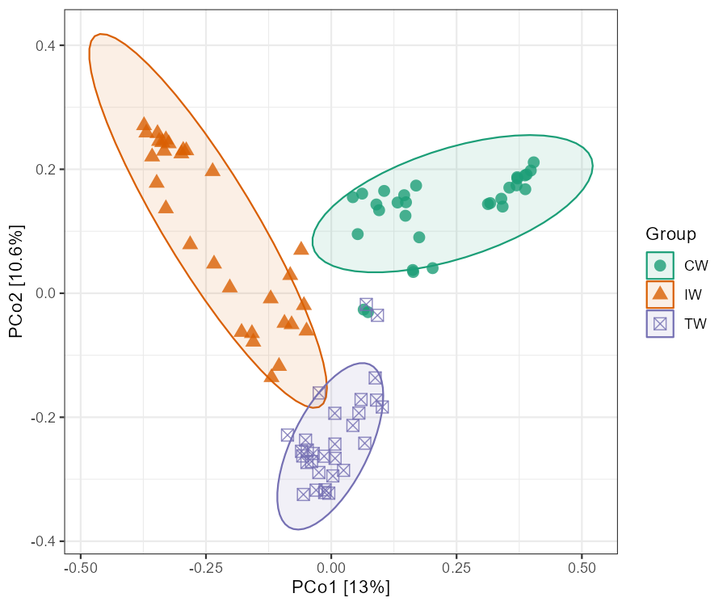
More examples on different options.
t1$plot_ordination(plot_color = "Type", plot_type = "point")
t1$plot_ordination(plot_color = "Group", point_size = 5, point_alpha = .2, plot_type = c("point", "ellipse"), ellipse_chull_fill = FALSE)
t1$plot_ordination(plot_color = "Group", plot_shape = "Group", plot_type = c("point", "centroid"))
t1$plot_ordination(plot_color = "Group", plot_shape = "Group", plot_type = c("point", "ellipse", "centroid"))
t1$plot_ordination(plot_color = "Group", plot_shape = "Group", plot_type = c("point", "chull"))
t1$plot_ordination(plot_color = "Group", plot_shape = "Group", plot_type = c("point", "chull", "centroid"))
t1$plot_ordination(plot_color = "Group", plot_shape = "Group", plot_type = c("chull", "centroid"))
t1$plot_ordination(plot_color = "Group", plot_shape = "Group", plot_type = c("point", "chull", "centroid"), add_sample_label = "SampleID")
t1$plot_ordination(plot_color = "Group", plot_shape = "Group", plot_type = "centroid")
t1$plot_ordination(plot_color = "Group", plot_shape = "Group", plot_type = "centroid", centroid_segment_alpha = 0.9, centroid_segment_size = 1, centroid_segment_linetype = 1)
t1$plot_ordination(plot_type = c("point", "centroid"), plot_color = "Type", centroid_segment_linetype = 1)
t1$plot_ordination(plot_color = "Saline", point_size = 5, point_alpha = .2, plot_type = c("point", "chull"), ellipse_chull_fill = FALSE, ellipse_chull_alpha = 0.1)
t1$plot_ordination(plot_color = "Group") + theme(panel.grid = element_blank()) + geom_vline(xintercept = 0, linetype = 2) + geom_hline(yintercept = 0, linetype = 2)One example for PCA or DCA with Genus data and loading arrow.
tmp <- mt_rarefied$merge_taxa(taxa = "Genus")
tmp$tax_table %<>% .[.$Genus != "g__", ]
tmp$tidy_dataset()
rownames(tmp$otu_table) <- tmp$tax_table[rownames(tmp$otu_table), "Genus"]
rownames(tmp$tax_table) <- tmp$tax_table[, "Genus"]
t1 <- trans_beta$new(dataset = tmp)
t1$cal_ordination(method = "PCA")
t1$plot_ordination(plot_color = "Group", loading_arrow = TRUE, loading_text_italic = TRUE)
t1$cal_ordination(method = "DCA")
t1$plot_ordination(plot_color = "Group", loading_arrow = TRUE, loading_text_italic = TRUE)Then we plot and compare the group distances.
t1 <- trans_beta$new(dataset = mt_rarefied, group = "Group", measure = "bray")
# calculate and plot sample distances within groups
t1$cal_group_distance(within_group = TRUE)
# return t1$res_group_distance
# perform Wilcoxon Rank Sum and Signed Rank Tests
t1$cal_group_distance_diff(method = "wilcox")
# plot_group_order parameter can be used to adjust orders in x axis
t1$plot_group_distance(add = "mean")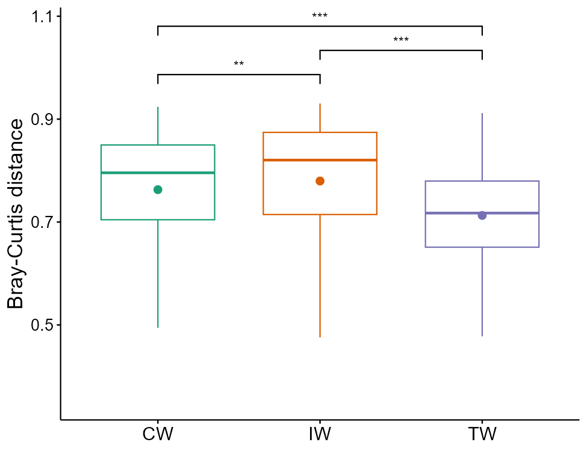
# calculate and plot sample distances between groups
t1$cal_group_distance(within_group = FALSE)
t1$cal_group_distance_diff(method = "wilcox")
# parameters in plot_group_distance function will be passed to the plot_alpha function of trans_alpha class
t1$plot_group_distance(plot_type = "ggviolin", add = "mean_se")
t1$plot_group_distance(add = "mean")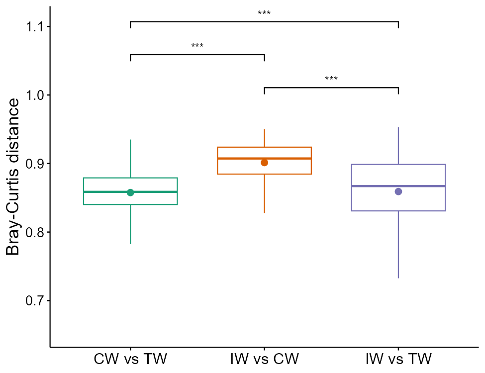
Clustering plot is also a frequently used method.
# extract a part of data
tmp <- clone(mt_rarefied)
tmp$sample_table %<>% subset(Group %in% c("CW", "TW"))
tmp$tidy_dataset()
t1 <- trans_beta$new(dataset = tmp, group = "Group")
# use replace_name to set the label name, group parameter used to set the color
t1$plot_clustering(group = "Type", replace_name = c("Type"))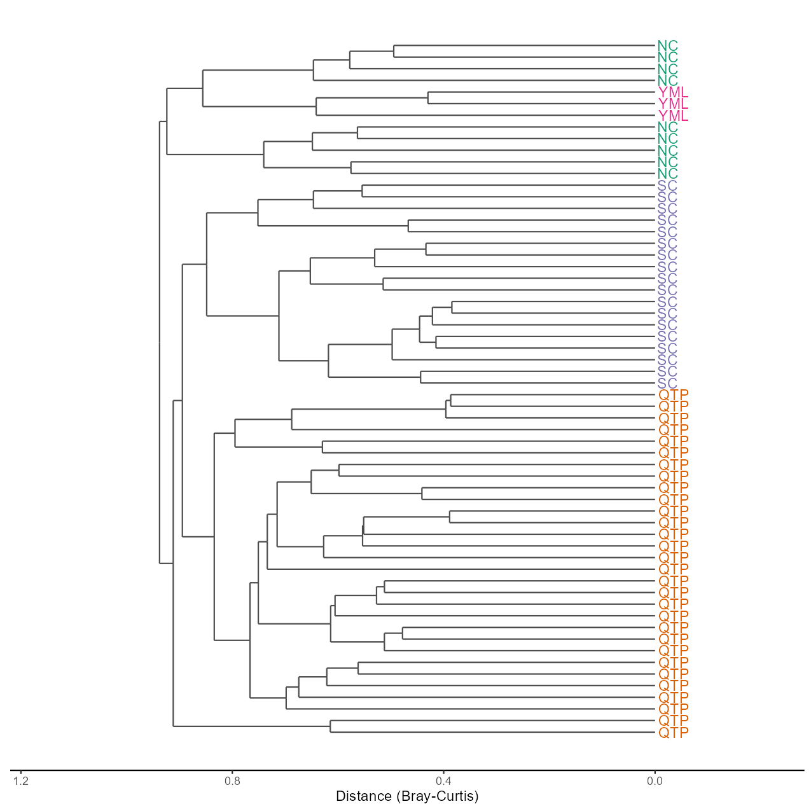
PerMANOVA(Anderson 2001) can be applied to the differential test of distances among groups via the cal_manova function developed
based on the adonis2 function of vegan package.
t1 <- trans_beta$new(dataset = mt_rarefied, group = "Group", measure = "bray")
# manova for all groups when manova_all = TRUE
t1$cal_manova(manova_all = TRUE)
t1$res_manova## Use Group column for the overall test!## The result is stored in object$res_manova ...| Df | SumOfSqs | R2 | F | Pr(>F) | Significance | |
|---|---|---|---|---|---|---|
| Group | 2 | 6.121 | 0.1955 | 10.57 | 0.001 | *** |
| Residual | 87 | 25.18 | 0.8045 | NA | NA | NA |
| Total | 89 | 31.3 | 1 | NA | NA | NA |
The parameter manova_all = FALSE can make the test switch to paired group comparison.
## Use groups in Group column for the paired test!## The result is stored in object$res_manova ...| Groups | measure | F | R2 | p.value | p.adjusted | Significance |
|---|---|---|---|---|---|---|
| IW vs CW | bray | 11.01 | 0.1595 | 0.001 | 0.001 | *** |
| IW vs TW | bray | 9.992 | 0.147 | 0.001 | 0.001 | *** |
| CW vs TW | bray | 10.69 | 0.1556 | 0.001 | 0.001 | *** |
When there are too many comparison pairs or when comparisons are valuable only within certain categories, the by_group parameter can be used.
## Use groups in Type column for the paired test!## For by_group: IW ...## For by_group: CW ...## For by_group: TW ...## Skip by_group: TW, because groups number < 2 ...## The result is stored in object$res_manova ...| by_group | Groups | measure | F | R2 | p.value | p.adjusted |
|---|---|---|---|---|---|---|
| IW | NE vs NW | bray | 4.462 | 0.1375 | 0.001 | 0.001 |
| CW | NC vs YML | bray | 4.077 | 0.2896 | 0.004 | 0.004 |
| CW | NC vs SC | bray | 7.095 | 0.2211 | 0.001 | 0.003 |
| CW | YML vs SC | bray | 4.492 | 0.1912 | 0.003 | 0.004 |
| Significance |
|---|
| *** |
| ** |
| ** |
| ** |
The parameter manova_set has higher priority than manova_all. If manova_set is provided, manova_all parameter will be disabled.
# manova for specified group set: such as "Group + Type"
t1$cal_manova(manova_set = "Group + Type")
t1$res_manova## The result is stored in object$res_manova ...| Df | SumOfSqs | R2 | F | Pr(>F) | Significance | |
|---|---|---|---|---|---|---|
| Group | 0 | -3.553e-15 | -1.135e-16 | -Inf | NA | NA |
| Type | 3 | 3.783 | 0.1208 | 4.949 | 0.001 | *** |
| Residual | 84 | 21.4 | 0.6836 | NA | NA | NA |
| Total | 89 | 31.3 | 1 | NA | NA | NA |
From v1.0.0, ANOSIM method is also available.
# the group parameter is not necessary when it is provided in creating the object
t1$cal_anosim(group = "Group")
t1$res_anosim
t1$cal_anosim(group = "Group", paired = TRUE)
t1$res_anosimPERMDISP(Anderson et al. 2011) is implemented to test multivariate homogeneity of groups dispersions (variances) based on the betadisper function of vegan package.
## The result is stored in object$res_betadisper ...##
## Permutation test for homogeneity of multivariate dispersions
## Permutation: free
## Number of permutations: 999
##
## Response: Distances
## Df Sum Sq Mean Sq F N.Perm Pr(>F)
## Groups 2 0.04131 0.0206545 4.1682 999 0.022 *
## Residuals 87 0.43110 0.0049552
## ---
## Signif. codes: 0 '***' 0.001 '**' 0.01 '*' 0.05 '.' 0.1 ' ' 1
##
## Pairwise comparisons:
## (Observed p-value below diagonal, permuted p-value above diagonal)
## CW IW TW
## CW 0.4970000 0.071
## IW 0.4621193 0.006
## TW 0.0566190 0.0050319For the explanation of statistical methods in microbial ecology, please read the references (Ramette 2007; Buttigieg and Ramette 2014).
5.2.2 Key points
- trans_beta$new: creating
trans_betaobject withmeasureparameter can invokebeta_diversityinmicrotableobject for transformation - cal_ordination(): PCoA, PCA and NMDS approaches are all available
- cal_manova():
cal_manovafunction can be used for paired comparisons, overall test and multi-factors test - plot_group_distance(): manipulating
object$res_group_distance_diffcan control what statistical results are presented in the plot.
5.3 trans_rarefy class
The class trans_rarefy can be used for the rarefaction and the following plotting to see whether
the sequencing depth is enough to cover all the so-called species in the microbial community.
Rarefying a community means to repeatedly subsample a fixed number of reads from each sample, so that
all the samples become comparable in sequencing depth, and the alpha diversity is recalculated after
each rarefying.
The resulting curve, i.e. the rarefaction curve, usually rises steeply in the low-depth region and then
flattens out once the sequencing depth is enough to cover most of the species in the community.
The class is a wrapper of two other classes: the rarefying is performed by the norm function of the
trans_norm class, and the alpha diversity is calculated by the cal_alphadiv function of the
microtable class, in which the measurements are computed by the vegan package (Oksanen et al. 2019).
All the results shown in this section were checked with microeco v2.4.0.
5.3.1 Example
The alphadiv parameter accepts one or more alpha diversity measurements, and "Observed" means the
observed species number, i.e. the richness.
The depth parameter determines at which sequencing depths the data are rarefied.
The rarefying and the calculation of the alpha diversity are run once per depth.
library(microeco)
data(sample_info_16S)
data(otu_table_16S)
# set.seed is used to fix the random number generation to make the results repeatable
set.seed(123)
tmp <- microtable$new(sample_table = sample_info_16S, otu_table = otu_table_16S)
tmp$tidy_dataset()
# trans_rarefy class: rarefy the data at the provided depths and calculate the alpha diversity
t1 <- trans_rarefy$new(tmp, alphadiv = "Observed", depth = c(0, 10, 50, 500, 2000, 6000, 10000, 15000, 20000))As the norm function removes the features and the samples that do not survive the random subsampling,
several messages are printed for each depth.
The expected messages are (truncated):
Rarefy data at depth 10 ...
12915 features are removed because they are no longer present in any sample after random subsampling ...
12915 taxa with 0 abundance are removed from the otu_table ...
Rarefy data at depth 50 ...
11235 features are removed because they are no longer present in any sample after random subsampling ...
11235 taxa with 0 abundance are removed from the otu_table ...
...
Rarefy data at depth 15000 ...
36 samples are removed because of fewer reads than input sample.size ...
246 taxa with 0 abundance are removed from the otu_table ...
246 features with 0 abundance are removed after filtering samples ...
569 features are removed because they are no longer present in any sample after random subsampling ...
569 taxa with 0 abundance are removed from the otu_table ...
Rarefy data at depth 20000 ...
65 samples are removed because of fewer reads than input sample.size ...
...
The rarefied data is stored in object$res_rarefy ...The result is a data.frame stored in t1$res_rarefy, and the measurements and depths used are also
saved in the object.
# return t1$res_rarefy; SampleID: sample name, seqnum: rarefying depth
head(t1$res_rarefy)
# the measurements and depths used
t1$measure
t1$depth
# the print method of the class
t1 SampleID seqnum Observed
1 S1 0 0
2 S2 0 0
3 S3 0 0
4 S4 0 0
5 S5 0 0
6 S6 0 0
[1] "Observed"
[1] 0 10 50 500 2000 6000 10000 15000 20000
trans_rarefy class:
The measures used: Observed
res_rarefy have been calculated at depths: 0, 10, 50, 500, 2000, 6000, 10000, 15000, 20000 Some important details:
depth = 0is a special value: the data are not rarefied and all the diversity values are directly set to 0, so it works as the common starting point of the curve.- The sample sums of the example data range from 10364 to 37374, so all the depths used here are available for every sample.
- For a sample whose sequencing depth is smaller than the rarefying depth, the sample is removed by the
normfunction, so it is absent at this depth and its curve stops earlier. In this example the numbers of retained samples are 90 at the depths 0-10000, 54 at 15000 and 25 at 20000, sot1$res_rarefyhas 709 rows in total. - The rarefying is a random subsampling, but the results are repeatable, as the
normfunction fixes the random seed (rngseed = 123by default); see the following More options section.
Then the rarefaction curve can be plotted directly with the plot_rarefy function, which returns a
ggplot object.
# the color parameter can be any column name of the sample_table
p1 <- t1$plot_rarefy(color = "Group", show_point = TRUE, add_fitting = FALSE)
p1
# use a fitted curve instead of the points and lines
p2 <- t1$plot_rarefy(color = "Group", show_point = FALSE, add_fitting = TRUE)
p2
# show the sample names at the end of the curves
p3 <- t1$plot_rarefy(show_samplename = TRUE, color_values = rep("grey70", 100), show_legend = FALSE)
p3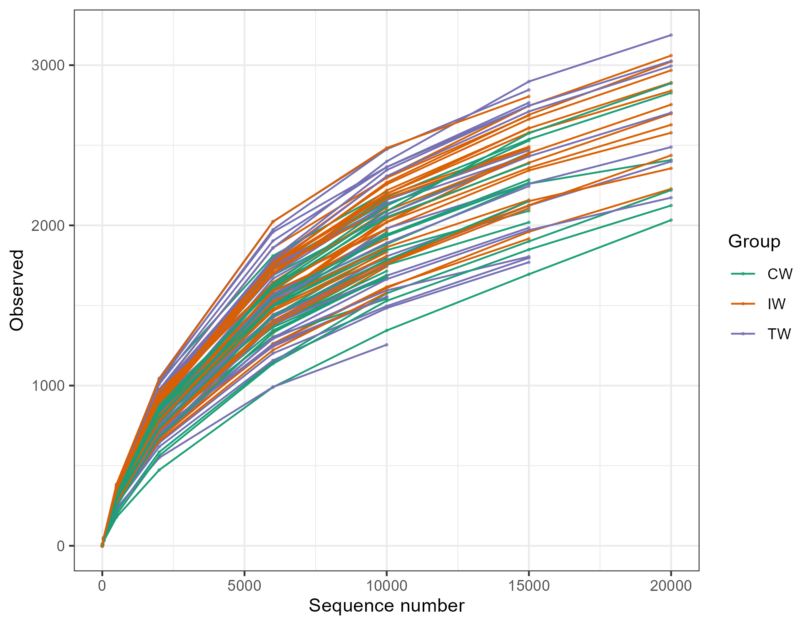
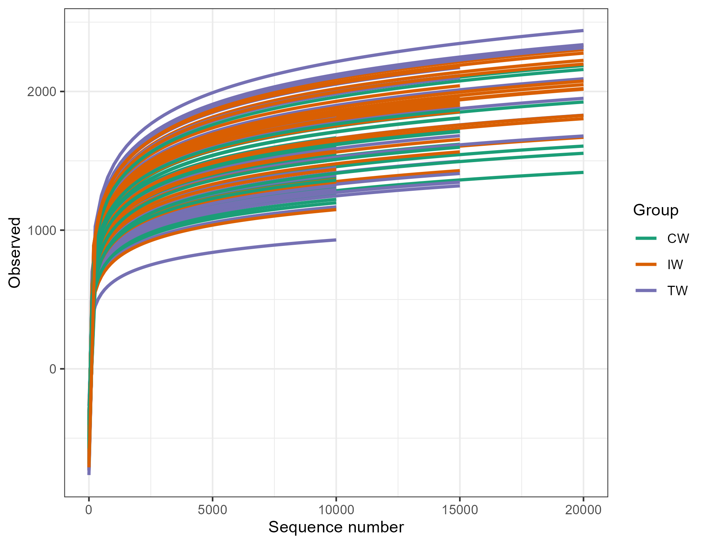
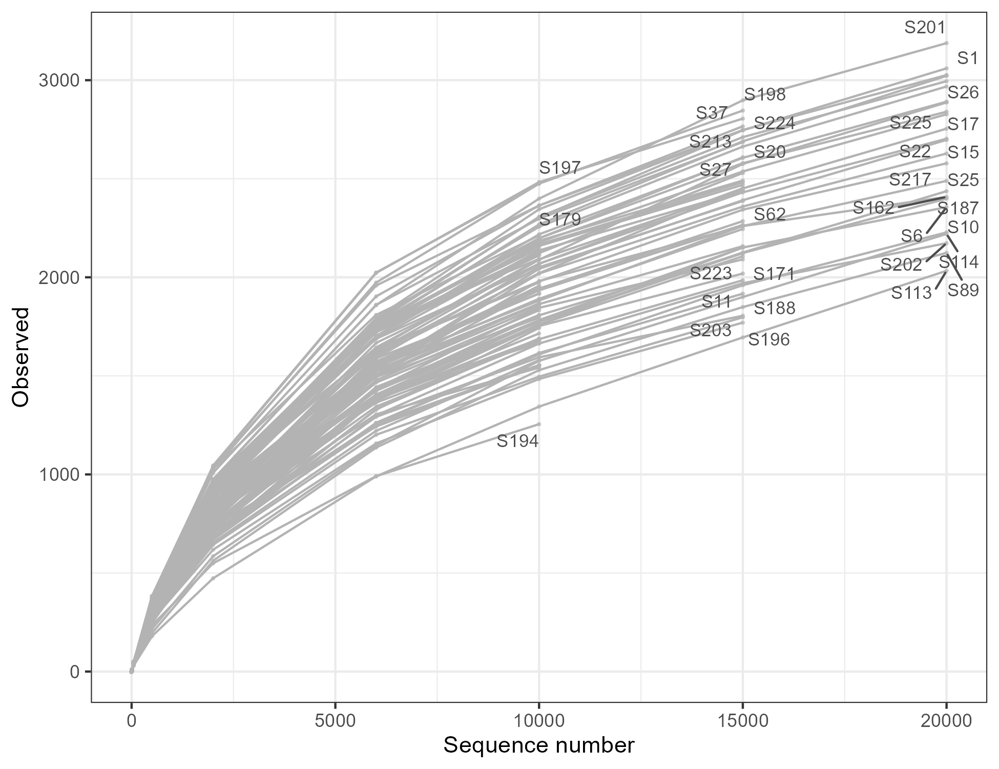
color defaults to "SampleID"; "Group" is used in the first two plots just to keep the legend
readable.
In the third plot all the curves are drawn in grey and each sample is labelled at its own last available
depth.
As the label colours are taken from color_values, don’t forget to provide enough colours; if the colours
provided are fewer than the groups, the class prints a message and expands them automatically by colour
interpolation.
5.3.2 More options
5.3.2.1 Multiple measurements at the same time
One or more measurements can be calculated in the same rarefying process, so that they share the same rarefied data and no extra random subsampling is needed.
t1 <- trans_rarefy$new(tmp, alphadiv = c("Observed", "Shannon"), depth = c(0, 50, 500, 2000, 6000, 10000, 15000))
# the plot is faceted by the measurements when more than one measurement is used
t1$plot_rarefy(color = "Group")
# only one of the measurements can be shown with the measure parameter
t1$plot_rarefy(color = "Group", measure = "Shannon")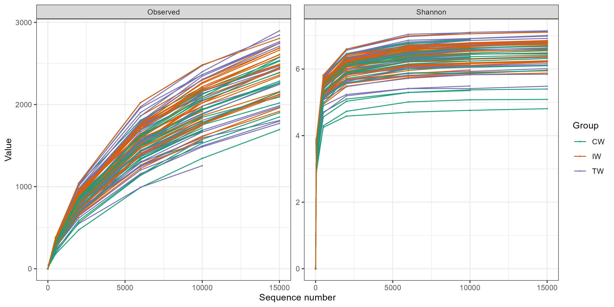
When multiple measurements are used, each measurement is shown in its own panel with a free y axis
(facet_wrap(~ measure, scales = "free_y")) and the y axis title defaults to "Value".
The names of the measurements are case-insensitive, and both the long names and the short names used in
the vegan package are accepted, e.g. "Observed"/"s.obs", "Chao1"/"s.chao1", "ACE"/"s.ace".
The available measurements are Observed, Coverage, Chao1, ACE, Shannon, Simpson, InvSimpson, Fisher,
Pielou and PD.
5.3.2.2 Automatic generation of the depths
When depth is not provided, a sequence of 10 depths ranging from 0 to the maximum of the sample sums is
generated automatically with a quadratic spacing.
# the depth is generated automatically when it is not provided
t1 <- trans_rarefy$new(tmp, alphadiv = "Observed")
t1$depthThe parameter depth is not provided! Use the automatically generated depths: 0, 461, 1846, 4153, 7383, 11535, 16611, 22609, 29530, 37374 ...
[1] 0 461 1846 4153 7383 11535 16611 22609 29530 37374The depths are calculated as round(max(sample_sums) * seq(0, 1, length.out = 10)^2), i.e. the intervals
become larger and larger.
Such a spacing puts more depths in the low-depth region, where the curve rises steeply, and fewer in the
high-depth region, where the curve has already become flat.
The default measurement is "Shannon" when alphadiv is not provided.
5.3.2.3 Alternative rarefying method
The method and rngseed parameters are passed to the norm function of the trans_norm class.
Besides the default "rarefy", the "SRS" method (scaling with ranked subsampling) is available and can
be used to avoid the information loss of the classic rarefaction (Beule and Karlovsky 2020).
# "SRS" is the scaling with ranked subsampling method
t1 <- trans_rarefy$new(tmp, alphadiv = "Observed", depth = c(0, 2000), method = "SRS")
# change the random seed used by the subsampling; the rarefying is repeatable for a fixed seed
t1 <- trans_rarefy$new(tmp, alphadiv = "Observed", depth = c(0, 2000), rngseed = 1)Note that sample.size in ... is ignored, as the library size is controlled by the depth parameter;
a message is printed when it is provided.
5.3.2.4 Plot adjustments
# axes titles, legend and the size and transparency of the points
t1$plot_rarefy(color = "Group", x_axis_title = "Sequencing depth", y_axis_title = "Observed richness",
show_point = TRUE, point_size = .5, point_alpha = .8)
# the parameters in ... are passed to geom_line (add_fitting = FALSE) or geom_smooth (add_fitting = TRUE)
t1$plot_rarefy(linewidth = 1, alpha = .5)
t1$plot_rarefy(color = "Group", show_point = FALSE, add_fitting = TRUE,
fitting_method = "lm", fitting_formula = y ~ x)
# the returned object is a ggplot, so it can be further customized
t1$plot_rarefy(color = "Group") + ggplot2::theme_classic()add_fitting = TRUE fits the curve with ggplot2::geom_smooth; the default fitting_method = "lm" and
fitting_formula = y ~ log(x + 1) avoid the warnings of the default "loess" method, as there are
usually only a few depths for each sample.
Note that x + 1 is used instead of x in the default formula, because the depth 0 makes log(x)
invalid.
The se argument of geom_smooth is fixed to FALSE inside the class, so passing se in ... raises
an error when add_fitting = TRUE.
5.3.3 Key points
- The class is a wrapper: the rarefying comes from
trans_norm$normand the alpha diversity frommicrotable$cal_alphadiv; one rarefiedmicrotableobject is rebuilt from the original data at each depth, so the rarefying at different depths is independent. depth = 0is kept as an artificial starting point of the curve, where all the diversity values are 0 rather than the real values of the original data.- The
depthvalues must be non-negative integers and not larger thanmax(dataset$sample_sums()); duplicated values are removed and the depths are sorted internally. - Samples are removed at the depths larger than their own sequencing depth, so the curves are interrupted
and the number of rows per depth decreases; the total number of rows of
res_rarefyis therefore smaller thanlength(depth) * n_samples. - Rarefying is random but repeatable:
rngseed = 123by default, and the results are identical for the same seed. - Very low depths should be used with care: the
"Fisher"measurement may be unavailable, and"Pielou"returnsNaNwhen only one species is present at a depth. The class prints a message listing the measurements and the number of rows with missing values, e.g.Pielou (90 rows)at depth 1 for the example data. alphadivis case-insensitive; the available measurements are Observed, Coverage, Chao1, ACE, Shannon, Simpson, InvSimpson, Fisher, Pielou and PD.- Parameters in
...ofneware passed to thenormfunction, such asmethod,rngseedandreplace, exceptsample.size, which is controlled bydepth. colorofplot_rarefycan be any column ofsample_tableand defaults to"SampleID";color_valuesare expanded automatically when they are not enough.plot_rarefyreturns a ggplot object, so the plot can be further customized with the ggplot2 syntax.